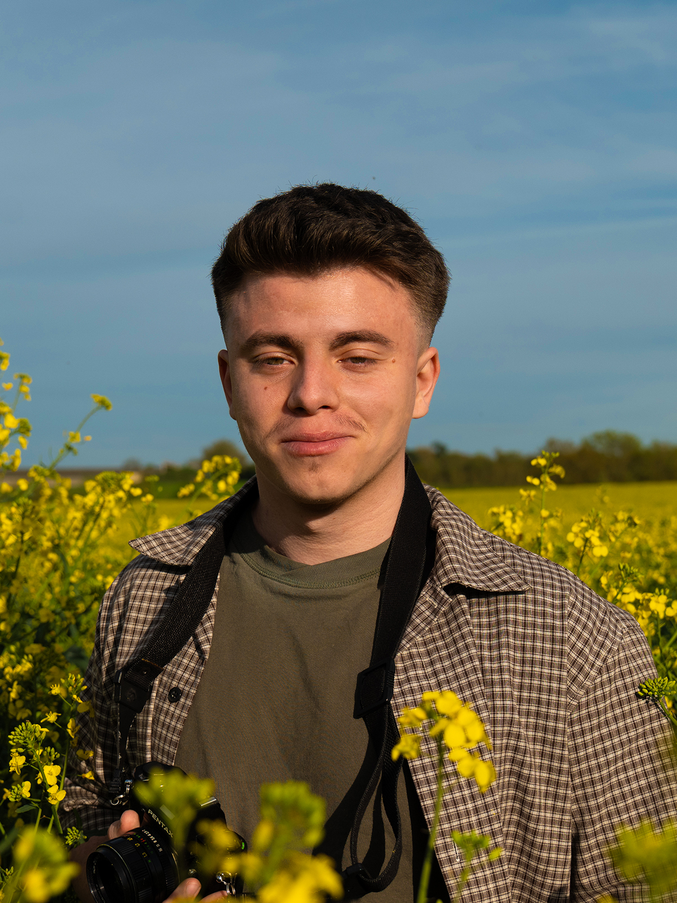

Après un bachelor en design graphique puis un master en direction artistique à l'EEGP Angers, dont trois années en alternance, j'arrive à un tournant : mettre cette pratique au service d'un projet qui me ressemble.
La mode m'attire particulièrement. J'y consacre d'ailleurs mon mémoire, sur la façon dont la direction artistique façonne, par l'image, nos identités et nos appartenances. C'est un terrain qui m'intéresse, sans être le seul : ce que je cherche avant tout, c'est un projet où exercer pleinement mon regard de DA.
La photographie est mon autre langage. Elle me rapproche du milieu de la mode, mais m'emmène aussi ailleurs : en photo animalière comme en photo sportive, deux disciplines qui aiguisent le même œil, celui que je porte ensuite sur chaque projet.
Contact
Adresse
AngersFrance, 49000